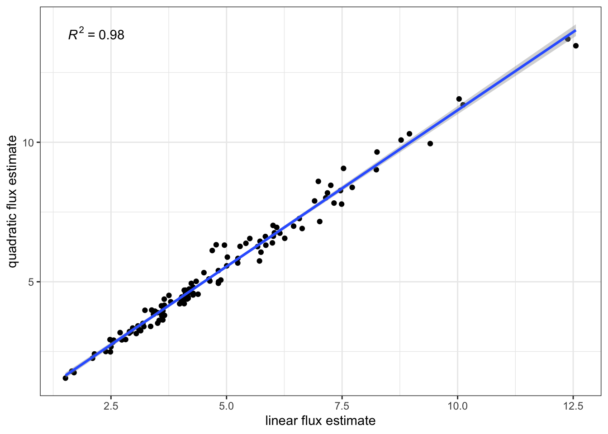
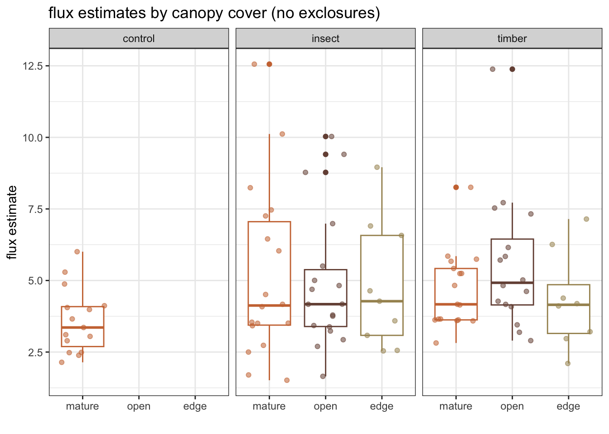

In this document I am visualizing, analyzing, and interpreting data collected in 2022 and 2023 in Newfoundland, Canada, as part of a collaborative research project on the effects of moose browsing/activity on boreal forest soil carbon dynamics (stocks and emissions).
I have a handful of datasets from each year: - soil carbon respiration/flux data collected using survey chambers (handheld, manually operated) - vegetation data (community composition, canopy) - soil data (carbon and nitrogen content, bulk density) - associated meta-data (soil temp/moisture, light level, etc.)
The goal is to determine how best to analyze these data to explore my research questions: - 2022: what is the overall difference, as well as the difference in spatial variability, in soil carbon flux in moose meadows compared to mature forests? - 2023: what is the overall difference in soil carbon flux across observational treatments (exclosure aka moose recovery; moose meadow; mature stand) as well as the difference in spatial variability?
The difference between the two datasets above is in how I collected it: - 2022: smaller number of sites, greater within-site sampling rate: 15 total collars ranging from inside a moose meadow, to its edge, to inside the mature stand adjacent (three transects of five collars each) - 2023: larger number of sites, less within-site sampling: 3 collars located at each site, ranging from mature stand to moose meadow to exclosure (the goal being to capture across-site patterns in soil respiration with greater power, so focusing less on within-site variability and more on across-site)
2 2022 soil flux/respiration data: LiCor 8100A
In 2022, I collected survey data on soil respiration using a handheld LiCor-brand 8100A chamber system. I cleaned and conducted initial visualizations and assessments of that dataset in another R project. (Located within this project, in the subfolder titled, “2022 data”. I have copied over that dataset to the main folder of this project for the sake of simplicity, but the cleaning/tidying process is clearly replicable within that subfolder.)
2.1 import data, brief visualization:
plot relationship between Q and L flux estimates:
Code
fluxes22%>%ggplot(aes(x=Lflux_dry, y=Qflux_dry))+geom_point()+stat_poly_line()+stat_poly_eq()+labs(x ="linear flux estimate", y ="quadratic flux estimate")+theme_bw()

Code
# R2 = 0.98, great relationship between the two so going to go with the linear estimates for simplicity's sake
R2 = 0.98, relationship between linear and quadratic flux estimates is very high. Going forward with linear estimates for simplicity’s sake.
Shapiro-Wilk normality test
data: fluxes22$Lflux_dry
W = 0.91001, p-value = 7.241e-07
Code
#W = 0.91001, p-value = 7.241e-07; data is significantly non-normally distributed# distribution of data is non-normal, meaning I may want to explore an analysis that is non-parametric/median based (e.g. Fligner-Killeen nonparametric test of variances between groups as used in Bond-Lamberty et al. 2019; https://github.com/PNNL-PREMIS/PREMIS-ghg)
data distribution around collars:
Code
fluxes22%>%filter(!is.na(treatment))%>%ggplot(aes(as.factor(collar), Lflux_dry, group =as.factor(collar), color =as.factor(collar)))+geom_boxplot()+geom_jitter(aes(color =as.factor(collar), alpha =0.75))+xlab("collar location (least to most canopy cover)")+ylab("flux estimate")+facet_wrap(~treatment)+scale_color_manual(values =cal_palette("conifer"))+theme_bw()+theme(legend.position ="none")
fluxes22<-fluxes22%>%filter(!is.na(treatment))%>%#assign the collars a canopy cover levelmutate(canopy =case_when(collar==4|collar==5~"mature",collar==3~"edge",collar==1|collar==2~"open"))%>%#change all the collars from the "control" site to mature canopy covermutate(canopy =case_when(treatment=="control"~"mature", .default =as.character(canopy)))%>%mutate(canopy =case_when(treatment=="exclosure"~"exclosure", .default =as.character(canopy)))neworder<-c("open", "edge", "mature", "exclosure")fluxes22<-fluxes22%>%#relevel the order so plot increases in cover L --> Rmutate_at(vars(canopy), ~fct_relevel(.x, neworder))fluxes22%>%filter(treatment!="exclosure")%>%ggplot(aes(canopy, Lflux_dry, color =canopy))+geom_boxplot()+geom_jitter(aes(color =canopy, alpha =0.75))+xlab("")+ylab("flux estimate")+ggtitle("flux estimates by canopy cover (no exclosures)")+scale_color_manual(values =cal_palette("conifer"))+facet_wrap(~treatment)+theme_bw()+theme(legend.position ="none")

plot relationship between flux and soil temp:
Code
fluxes22%>%filter(!is.na(treatment))%>%# filter(treatment != "exclosure" & treatment != "control") %>%filter(treatment!="exclosure")%>%ggplot(aes(soil_temp, Lflux_dry, color =canopy))+geom_point()+stat_smooth(method =lm)+xlab("soil temperature (C)")+ylab("flux estimate")+facet_wrap(~canopy)+scale_color_manual(values =cal_palette("conifer"))+theme_bw()+theme(legend.position ="none")
Helper functions pulled from Bond-Lamberty et al. 2019:
Use a linear mixed-effects model to examine effects of soil temp (5cm) and soil moisture (volumetric water content, 0-100%), and their interaction on soil respiration (fixed effects; site as a random effect to account for the variation among sampling days). Natural log of flux to account for non-normal data distribution for dependent variable. Restricted maximum likelihood estimation (REML) using lme4 package. (See Bond-Lamberty et al. 2019)
Compute CV using helper function: code hacked from Bond-Lamberty et al. 2019
2.4 analyze statistical difference in coefficient of variation across collar locations (5) (site as random effect)
2.5 analyze statistical difference in coefficient of variation across canopy cover levels (3) (site as random effect)
3 2023 soil flux/respiration data: PP Systems EGM-5
In 2023, I collected survey data on soil respiration using a handheld PP Systems-brand EGM-5 chamber system.